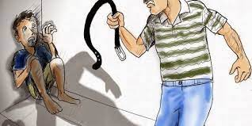
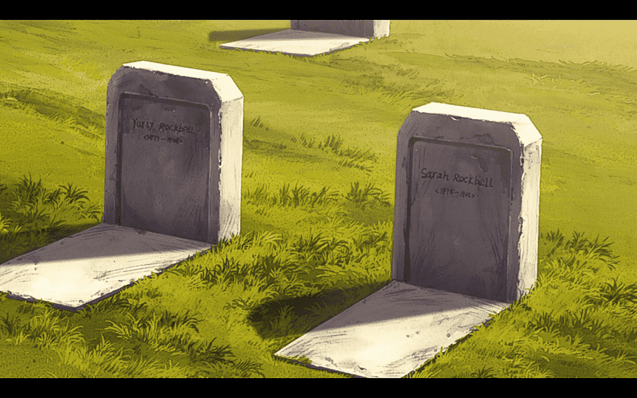
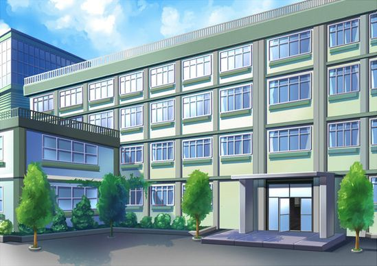

É direito da criança e do adolescente ser criado e educado
no seio de sua família e, excepcionalmente, em família substituta,
assegurada a convivência familiar e comunitária, em ambiente que
garanta seu desenvolvimento integral.
- § 1 o Toda criança ou adolescente que estiver inserido em
programa de acolhimento familiar ou institucional terá sua
situação reavaliada, no máximo, a cada 3 (três) meses, devendo
a autoridade judiciária competente, com base em relatório
elaborado por equipe interprofissional ou multidisciplinar, decidir
de forma fundamentada pela possibilidade de reintegração
familiar ou pela colocação em família substituta, em quaisquer das
modalidades previstas no art. 28 desta Lei.
- § 2 o A permanência da criança e do adolescente em programa
de acolhimento institucional não se prolongará por mais de 18
(dezoito meses), salvo comprovada necessidade que atenda ao seu
superior interesse, devidamente fundamentada pela autoridade
judiciária.
- § 3 o A manutenção ou a reintegração de criança ou adolescente
à sua família terá preferência em relação a qualquer outra
providência, caso em que será esta incluída em serviços e
programas de proteção, apoio e promoção, nos termos do § 1 o do
art. 23, dos incisos I e IV do caput do art. 101 e dos incisos I a IV
do caput do art. 129 desta Lei.
- § 4 o Será garantida a convivência da criança e do adolescente com
a mãe ou o pai privado de liberdade, por meio de visitas periódicas
promovidas pelo responsável ou, nas hipóteses de acolhimento
institucional, pela entidade responsável, independentemente de
autorização judicial.
§ 5 o Será garantida a convivência integral da criança com a mãe
adolescente que estiver em acolhimento institucional.
- § 6 o A mãe adolescente será assistida por equipe especializada
multidisciplinar.
Art. 22
Aos pais incumbe o dever de sustento, guarda e educação
dos filhos menores, cabendo-lhes ainda, no interesse destes, a
obrigação de cumprir e fazer cumprir as determinações judiciais.
- A mãe e o pai, ou os responsáveis, têm direitos
iguais e deveres e responsabilidades compartilhados no cuidado
e na educação da criança, devendo ser resguardado o direito de
transmissão familiar de suas crenças e culturas, assegurados os
direitos da criança estabelecidos nesta Lei.
Art. 31
A colocação em família substituta estrangeira constitui
medida excepcional, somente admissível na modalidade de
adoção.

Art. 5
Nenhuma criança ou adolescente será objeto de qualquer
forma de negligência, discriminação, exploração, violência,
crueldade e opressão, punido na forma da lei qualquer atentado,
por ação ou omissão, aos seus direitos fundamentais.

Art. 26
Art. 26. Os filhos havidos fora do casamento poderão ser
reconhecidos pelos pais, conjunta ou separadamente, no próprio
termo de nascimento, por testamento, mediante escritura ou
outro documento público, qualquer que seja a origem da filiação.
- O reconhecimento pode preceder o nascimento
do filho ou suceder-lhe ao falecimento, se deixar descendentes.

Art. 42
Art. 42. Podem adotar os maiores de 18 (dezoito) anos,
independentemente do estado civil.
- § 1º Não podem adotar os ascendentes e os irmãos do adotando.
- § § 2 o Para adoção conjunta, é indispensável que os adotantes sejam
casados civilmente ou mantenham união estável, comprovada
a estabilidade da família.
- § § 3º O adotante há de ser, pelo menos, dezesseis anos mais velho
do que o adotando.
- §§ 4 o Os divorciados, os judicialmente separados e os excompanheiros podem adotar conjuntamente, contanto que
acordem sobre a guarda e o regime de visitas e desde que o estágio
de convivência tenha sido iniciado na constância do período de
convivência e que seja comprovada a existência de vínculos de
afinidade e afetividade com aquele não detentor da guarda, que
justifiquem a excepcionalidade da concessão.
- § § 5 oNos casos do § 4 o deste artigo, desde que demonstrado efetivo
benefício ao adotando, será assegurada a guarda compartilhada,
conforme previsto no art. 1.584 da Lei n o 10.406, de 10 de janeiro
de 2002 - Código Civil.
- § § 6 o A adoção poderá ser deferida ao adotante que, após
inequívoca manifestação de vontade, vier a falecer no curso do
procedimento, antes de prolatada a sentença.
Art. 49
Art. 49. A morte dos adotantes não restabelece o pátrio
poder poder familiar dos pais naturais.

Art. 54
Art. 54. É dever do Estado assegurar à criança e ao adolescente:
- I - ensino fundamental, obrigatório e gratuito, inclusive para os
que a ele não tiveram acesso na idade própria;
- II - progressiva extensão da obrigatoriedade e gratuidade ao
ensino médio;
- III - atendimento educacional especializado aos portadores de
deficiência, preferencialmente na rede regular de ensino;
- IV – atendimento em creche e pré-escola às crianças de zero a
cinco anos de idade; (Redação dada pela Lei nº 13.306, de 2016)
- V - acesso aos níveis mais elevados do ensino, da pesquisa e da
criação artística, segundo a capacidade de cada um;
- VI - oferta de ensino noturno regular, adequado às condições do
adolescente trabalhador;
- VII - atendimento no ensino fundamental, através de programas
suplementares de material didático-escolar, transporte,
alimentação e assistência à saúde.
- § 1º O acesso ao ensino obrigatório e gratuito é direito público
subjetivo.
- § 2º O não oferecimento do ensino obrigatório pelo poder público
ou sua oferta irregular importa responsabilidade da autoridade
competente.
- § 3º Compete ao poder público recensear os educandos no ensino
fundamental, fazer-lhes a chamada e zelar, junto aos pais ou
responsável, pela freqüência à escola
Art. 93
As entidades que mantenham programa de acolhimento
institucional poderão, em caráter excepcional e de urgência,
acolher crianças e adolescentes sem prévia determinação da
autoridade competente, fazendo comunicação do fato em até
24 (vinte e quatro) horas ao Juiz da Infância e da Juventude, sob
pena de responsabilidade.

Art. 77
Os proprietários, diretores, gerentes e funcionários
de empresas que explorem a venda ou aluguel de fitas de
programação em vídeo cuidarão para que não haja venda ou
locação em desacordo com a classificação atribuída pelo órgão
competente.
- As fitas a que alude este artigo deverão exibir, no
invólucro, informação sobre a natureza da obra e a faixa etária a
que se destinam.